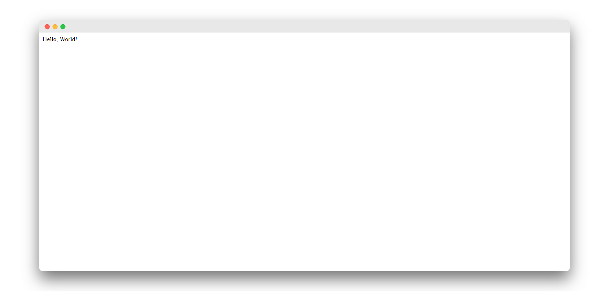

Till now everything was about the configuration which is needed to be done for any web app, now it's time to actually design the app. Suppose you were creating a hello world app without a framework you'd simply type Hello world into a text file, call it hello.html, and upload it to a directory on a web server somewhere.
Notice in this process you've specified two key pieces of information about that web page: its contents (the string Hello world) and its URL (for example, http://www.example.com/hello.html).
With Django, you specify those same two things, but in a different manner. The view function produces the contents of the page in the views.py file and the URL is specified in urls.py file.
Let's create our first view, open views.py file of my_app and add the below lines.
from django.http import
HttpResponsedef index(request):
return HttpResponse('Hello, World!')
First, we imported the HttpResponse class from django.http module then we made a function that takes in a request and returns a HttpResponse object i.e. the string 'Hello, World!'. Note that every view function must take atleast one parameter by convention called request.
In order to see this view in our browser, we need to map this view in our URL configurations. Open the urls.py file of the main project. Which should look like this.
from django.contrib import admin
from django.urls import path
urlpatterns = [
path('admin/',admin.site.urls),
]
Now we need to tell Django explicitly that we need to activate the view for a partuicular URL
from django.contrib import admin
from django.urls import path
# imported views
from my_app import views
urlpatterns = [
path('admin/',admin.site.urls),
#configured the url
path('',views.index, name="homepage")]
First, we imported the views from my_app directory then in the URL patterns we added the path for the view
which is the homepage hence blank string denoted with ' ' than we mapped this URL to our index view, and at
last the optional argument name which we assign to homepage. This implies every request to the homepage
should return the 'Hello, world!' string.
Now let's test out our app by saving the files, open terminal and run the development server.
python manage.py runserver
Now visit http://127.0.0.1:8000/ you should see Hello, World! written there.

Try adding random paths after the URL like http://127.0.0.1:8000/something this will return 404 pages because we haven't mapped URLs for those pages.
In this article, we went through the creation of the traditional 'Hello, world!' app with Django if you have any question regarding it feel free to ask in the comment section below.